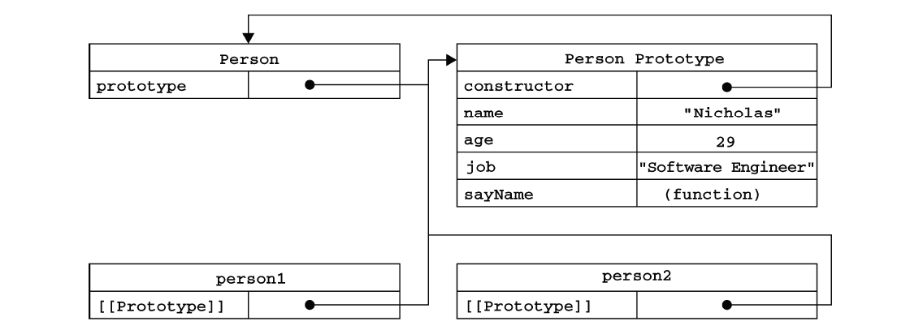
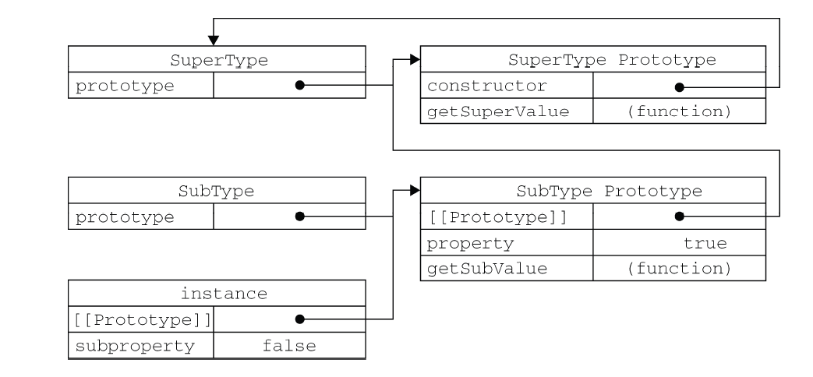
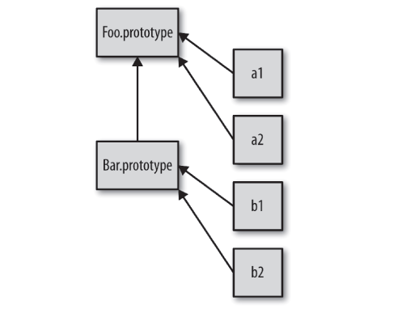
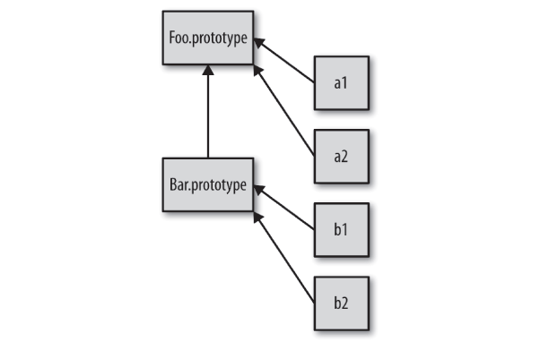

Table of Contents generated with DocToc
翻看了几本JS书籍，其中主要有以下几本：《JavaScript高级程序设计第三版》、《你不知道的JavaScript卷一》、《JavaScript权威指南》以及查看了MDN文档。文章主要说了JavaScript中原型的一些概念知识，花了一点时间去总结，如任何问题的话可以提出来一起交流解决。文章中的图大多是从网络和书中截取下来，并非本人原创。
结合书中的概念，原型是什么这个问题，可以这样去解释：原型就是一个引用（也就是指针），指向原型对象。这并不是废话，很多人说原型，实际上没意识到它只是一个引用，指向原型对象。原型在实例对象和构造函数中有不同的名称属性，但总是指向原型对象。如图所示：

[[prototype]]内置属性（双方括号代表这是JavaScript引擎内部使用的属性/方法，正常JS代码无法访问，但可以通过__proto__访问到，后面会说到），在对象被创建时就包含了该属性，指向它的构造函数的原型对象。.prototype属性，在函数被创建时就包含该属性，指向构造函数的原型对象 。要理解原型链，首先需要明白原型对象的作用就是让所有实例对象共享它的属性和方法。根据上图，不难发现，person1和person2中的内部属性[[prototype]]都指向Person原型对象。当进行对象属性查找的时候，比如person1.name，首先会检查对象本身是否有这个属性，如果没有就继续去查找该对象[[prototype]]指向的原型对象中是否有该属性，如果还是没有就继续去找这个原型对象的[[prototype]]指向的原型对象（注意，原型对象也是有他自己的[[prototype]]属性的）！这个过程会持续找到匹配的属性名或查找完整的原型链。不难理解了，原型链就是：每个实例对象（ object ）都有一个私有属性（称之为[[prototype]]）指向它的构造函数的原型对象（prototype ）。该原型对象也有一个自己的原型对象( [[prototype]] ) ，层层向上直到一个对象的原型对象为Object.prototype(因为所有对象都是源于Object.prototype，其中包含许多通用的功能方法)。显然，如果找完这个原型链都找不到就会返回undefined。这个过程可以用一张图描述：

显然，原型和原型链的作用就是：如果对象上没有知道需要的属性和方法引用，JS引擎就会继续在[[prototype]]关联的对象上进行查找。这也是原型和原型链存在的意义。
两个跟原型链有关的操作
function Person(name){
this.name = name;
}
Person.prototype.sayName = function() {
return this.name;
}
let myObject = new Person('练习生');
// 输出两个属性：name和sayName，其中sayName是原型对象中的属性
for(let key in myObject) {
console.log(key);
}
// 输出true，表示不可枚举的constructor存在于myObject中。
// 事实上constructor是在Person.prototype对象中
console.log("constructor" in myObject);给对象设置属性并不仅仅是添加一个属性或修改已有属性。这个过程应该是这样的：
// myObject的声明在第一个代码块
// 注意：sayName在Person.prototype中存在，将屏蔽原型链上的sayName方法
myObject.sayName = function() {
return `my name is:${this.name}`;
}
// 注意：age在myObject的整个原型链都不存在，将在实例中新建age属性
myObject.age = 23;
// 完成上述对myObject属性的设置，再新建一个对象
let myObject_1 = new Person('James');
// 查找myObject的属性和方法
myObject.age; //23
myObject.sayName(); // my name is: Bob
// 查找myObject_1的属性和方法
myObject.age; // undefined
myObject.sayName(); // 'Cat'直接设置实例属性，都会屏蔽原型链上的所有同名属性（前提是属性的writable为 true，并且属性没有setter），并有以下两种情况：
在面向对象语言中，类是可以被实例化多次，就像使用模具制作东西一样，对于每一个实例都会重复这个过程。但在JavaScript中，没有类，没有复制机制。只能创建多个对象，通过它们的内置[[prototype]]关联同一个原型对象。默认情况下，它们是关联的，并非复制，因为是同一个原型对象所以它们之间也不会完全失去联系。
比如说，new Person()生成一个对象，同时这个新对象的内置[[prototype]]关联的是Person.prototype对象。这里得到了两个对象，它们之间仅仅互相关联，并没有初始化类，如图所示：

这种机制也就是所谓的原型继承。这种Person()函数不算是类，它只是利用了函数的prototype属性“模仿类”而已！所以说，JavaScript没有类只有对象。
文章第一个代码块很容易让人认为Person是一个构造函数，因为使用new调用并看到他构造了一个对象。但其实Person跟其他普通函数没有什么不同，函数本身不是构造函数，所有的一切只是在函数调用前加了new关键字！这样就会把这个函数调用变成一个“构造函数调用”。new会劫持所有普通函数并用构造对象的形式去调用它。下面这段代码可以证明这点：
function BaseFunction() {
console.log('Not a constructor！');
}
let myObject = new BaseFunction();
// Not a constructor.
typeof myObject; // objectBaseFunction是一个普通函数并非构造函数，但通过new调用，却会构造出一个对象。因此，构造函数其实是所有带new的函数调用。
前面已经明确说过，JavaScript中只有对象，没有真正的类，但JavaScript开发者通过下面两种方法可以模拟类，如下代码所示：
function Foo(name) {
this.name = name;
}
Foo.prototype.myName = function() {
return this.name;
}
let a = new Foo('a');
let b = new Foo('b');
a.myName(); // a
b.myName(); // b接上面的代码所示，如果继续运行a.constructor === Foo，返回的是true，因此有这种错误观点:对象由Foo构造。现在是时候把这个错误观点改过来了。constructor是存在于Foo.prototype中，a对象只是[[prototype]]委托找到constructor！这和构造毫无关系，下面代码可以证明这一点：
function Foo(){}
//将Foo的原型对象指向一个空对象
Foo.prototype = {};
let a = new Foo();
a.constructor === Foo; //false
a.constructor === Object; // true嗯哼？现在你还敢说constructor表示a由Foo构建吗？按照这种错误观点，a.constructor === Foo应该返回true！其实constructor在只是创建函数时一个默认属性，指向prototype属性所在的函数。constructor属性时可以被修改的，让原型对象指向新的对象的时候，为了让constructor指向之前的函数，可以手动使用defineProperty方法添加一个不可枚举constructor属性。但真的很麻烦，总而言之不要太信任constructor属性！

从这张图，可看出三点
function Foo(name){
this.name = name;
}
Foo.prototype.myName = function() {
return this.name;
}
function Bar(name, label) {
Foo.call(this, name);
this.label = label;
}
// 将新的Bar原型对象和Foo的原型对象进行关联
Bar.prototype = Object.create(Foo.prototype);
Bar.prototype.myLabel = function() {
return this.label;
}
let a = new Bar("a", "obj a");
a.myName();
a.myLabel();Object.setPrototypeOf(obj1, obj2),表示直接将obj1的[[prototype]]关联到为obj2。以下两行代码都是错误的对象关联做法：
Bar.prototype = Foo.prototype;
Bar.prototype = new Foo();检查一个实例和祖先通常称为反射或内省。在JavaScript中通常用到
a instanceof Foo操作符,instanceof表示的是：在对象a的原型链上是否有指向Foo.prototype的对象。注意，instanceof的左侧是对象，右侧是函数。a.isPrototypeOf(b)，isPrototypeOf表示的是：在对象a的整条原型链上是否出现过b。Object.getPrototypeOf(a)，可以直接得到一个对象a的原型链。这里例举几点比较重要的概念：